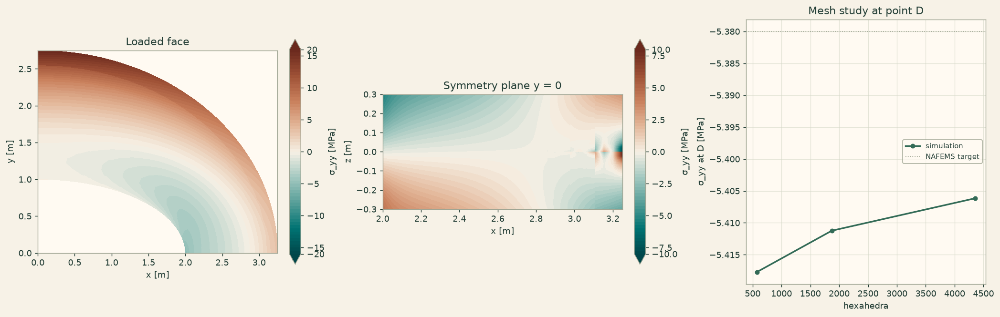
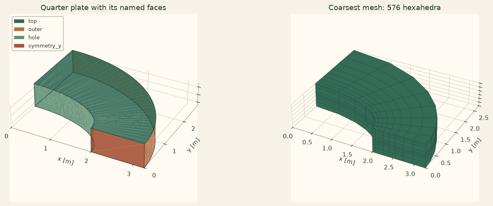

Docs › Examples › Thick elliptic plate under pressure (NAFEMS LE10)
Linear elasticity · 3D
Thick elliptic plate under pressure (NAFEMS LE10)
The NAFEMS LE10 benchmark: a thick elliptic ring plate under uniform pressure, graded against the published stress at point D.
Run locally with OneSimulation. The example downloads are free. Running them requires an activated runtime. Runtime Alpha 0.2.1a7 · CPython 3.13 on macOS (Apple Silicon), Ubuntu 22.04 (x86-64), and Windows x64. Installation and activation · View pilot plans. Scope of the reference checks.

What it computes
A quarter of the plate is read from a STEP file with named faces. OneSimulation solves 3D small-strain elasticity with 27-node quadratic hexahedra mapped onto the elliptic boundaries, graded towards point D and bound to the faces of the loaded part, with roller supports applied component by component. The script that builds the STEP file comes with the notebook.
What it checks
The stress at point D deviates from the NAFEMS target of -5.38 MPa by 0.70 %, 0.58 % and 0.49 % on three meshes.
Geometry
The notebook starts at the import of the CAD file thick_plate_pressure_le10.step: STEP (AP242), readable by any CAD program, with the names of the faces that the boundary conditions use. Put it next to the notebook.

The geometry script
The script thick_plate_pressure_le10_geometry.py builds the geometry with the CAD objects of OneSimulation and writes the file. Change a dimension there, run it, and run the notebook again.
"""Geometry of the OneSimulation example "Thick elliptic plate under pressure (NAFEMS LE10)".
Builds the quarter of the elliptic ring plate (hole 2 m x 1 m, outer edge 3.25 m x 2.75 m half axes,
0.6 m thick, centred on z = 0) with the CAD objects of OneSimulation and writes
thick_plate_pressure_le10.step. The file names the faces top, bottom, hole, outer, symmetry_x and
symmetry_y.
"""
from onesim.cad.d2 import Profile
from onesim.cad.d3 import Box, Prism
hole, outer_edge, thickness = (2.0, 1.0), (3.25, 2.75), 0.6
ring = Prism(
profile=Profile.ellipse(*outer_edge, name="outer").with_holes(
Profile.ellipse(*hole, name="hole")
),
height=thickness,
origin=(0.0, 0.0, -thickness / 2),
)
plate = ring & Box(length=4.0, width=4.0, height=1.0, origin=(0.0, 0.0, -0.5))
plate = plate.grouped(
symmetry_x=plate.boundaries["part.x_min"], symmetry_y=plate.boundaries["part.y_min"]
)
plate.save("thick_plate_pressure_le10.step")The notebook
The complete notebook, cell by cell. Run it to produce the figures and the comparison printout.
The plate is an elliptic ring: the hole is the ellipse \((x/2)^2+(y/1)^2=1\), the outer edge the ellipse \((x/3.25)^2+(y/2.75)^2=1\) (metres), and the plate is 0.6 m thick. A pressure of 1 MPa acts on the upper face. Because of symmetry only the quarter \(x\ge0,\ y\ge0\) is modelled.
The quarter comes from the CAD file thick_plate_pressure_le10.step, which names its faces; the script thick_plate_pressure_le10_geometry.py builds it with the CAD objects of OneSimulation.
| face | condition |
|---|---|
symmetry_x and symmetry_y | no displacement normal to the face |
outer | \(u_x=u_y=0\) |
mid-height line of outer | \(u_z=0\) |
top | pressure 1 MPa |
bottom and hole | free |
Steel with \(E=210\) GPa and \(\nu=0.3\).
Reference. NAFEMS, The Standard NAFEMS Benchmarks, test LE10: the stress at point \(D=(2,0,0.3)\), on the loaded face at the end of the hole's long axis, is \(\sigma_{yy}=-5.38\) MPa.
import numpy as np
from onesim.cad.exchange import load
from onesim.materials import IsotropicSolid
from onesim.meshing import Geometric, TwoSided, VolumeBlock, merge_volume_blocks
from onesim.numerics import Numerics
from onesim.numerics.fem import FiniteElement, Lagrange
from onesim.numerics.linear import SparseDirect
from onesim.physics.solid_mechanics import (
FixedDisplacementComponents,
LinearElasticity,
Pressure,
TractionFree,
)
from onesim.simulation import Problem, Simulation
from onesim.visualization import plots, theme
theme.set()Geometry and mesh
load returns the solid with its named faces. The benchmark is run on quadratic hexahedra: the quarter ring is one block whose map blends the two ellipses, graded towards the hole and towards point D, with a node layer at mid-height for the line support. merge_volume_blocks binds the block to the faces of the loaded part.
plate = load("thick_plate_pressure_le10.step")
faces = plate.boundaries
hole, outer_edge, thickness = (2.0, 1.0), (3.25, 2.75), 0.6
def plate_mesh(n):
"""Hexahedral mesh with n cells across the ring and around it."""
ring = lambda xi, eta, zeta: (
((1 - xi) * hole[0] + xi * outer_edge[0]) * np.cos(np.pi / 2 * eta),
((1 - xi) * hole[1] + xi * outer_edge[1]) * np.sin(np.pi / 2 * eta),
thickness * (zeta - 0.5),
)
through = np.r_[
0.5 * Geometric(n // 2, ratio=4.0, toward="end").reference(),
0.5 + 0.5 * TwoSided(n // 2 + 1, 3.0).reference()[1:],
]
return merge_volume_blocks(
[
VolumeBlock(
ring,
Geometric(n, ratio=4.0).reference(),
Geometric(n, ratio=3.0).reference(),
through,
)
],
plate,
order=2,
)
meshes = [plate_mesh(n) for n in (8, 12, 16)]
view = plots.Camera(elevation=32, azimuth=-62)
fig = plots.figure(1, 2, size=(15, 5.5))
plots.geometry(
plate,
selection={
"top": faces.top,
"outer": faces.outer,
"hole": faces.hole,
"symmetry_y": faces.symmetry_y,
},
labels=False,
camera=view,
title="Quarter plate with its named faces",
ax=fig[0],
)
plots.mesh(
meshes[0],
groups=("all",),
legend=False,
camera=view,
title=f"Coarsest mesh: {meshes[0].cell_count} hexahedra",
ax=fig[1],
)
plots.show()Model
steel = IsotropicSolid(
density=7850.0,
specific_heat_capacity=470.0,
thermal_conductivity=50.0,
youngs_modulus=210e9,
poisson_ratio=0.30,
thermal_expansion_coefficient=1.2e-5,
)
model = LinearElasticity(domain=plate.volume, material=steel)
problem = Problem(
name="NAFEMS LE10",
geometry=plate,
physics=(model,),
boundary_conditions=(
FixedDisplacementComponents(
boundary=faces.outer,
physics=model,
components=("x", "y", "z"),
where={"z": lambda x, y, z: abs(z) < 1e-9},
),
FixedDisplacementComponents(
boundary=faces.symmetry_x, physics=model, components=("x",)
),
FixedDisplacementComponents(
boundary=faces.symmetry_y, physics=model, components=("y",)
),
Pressure(boundary=faces.top, physics=model, value=1.0e6),
TractionFree(boundary=faces.bottom | faces.hole, physics=model),
),
)
numerics = Numerics(
spatial=FiniteElement(element=Lagrange(order=2)), linear_solver=SparseDirect()
)
stresses = [
Simulation(problem=problem, mesh=mesh, numerics=numerics)
.solve_stationary()
.field(model.stress)
for mesh in meshes
]
stress = stresses[-1]Results
The stress \(\sigma_{yy}\) at point D on the three meshes against the NAFEMS target.
target = -5.38
at_d = [
field.evaluate([[hole[0], 0.0, thickness / 2]])[0, 1] / 1e6 for field in stresses
]
print("hexahedra σ_yy at D [MPa] deviation from the NAFEMS target -5.38 MPa")
for mesh, value in zip(meshes, at_d):
print(f"{mesh.cell_count:9d} {value:17.4f} {100 * (value / target - 1):+12.2f} %")Figure
The stress \(\sigma_{yy}\) on the loaded face and on the symmetry plane \(y=0\), and the mesh study.
megapascal = lambda s, position: s[:, 1] / 1e6
fig = plots.figure(1, 3, size=(16, 5))
plots.surface(
stress,
boundary=faces.top,
component=megapascal,
colormap="diverging",
limits=(-16, 16),
subdivisions=3,
label="σ_yy [MPa]",
title="Loaded face",
ax=fig[0],
)
plots.surface(
stress,
boundary=faces.symmetry_y,
component=megapascal,
colormap="diverging",
limits=(-8, 8),
subdivisions=3,
label="σ_yy [MPa]",
title="Symmetry plane y = 0",
ax=fig[1],
)
plots.line(
[mesh.cell_count for mesh in meshes],
{"simulation": at_d},
hlines={"NAFEMS target": target},
markers=True,
xlabel="hexahedra",
ylabel="σ_yy at D [MPa]",
title="Mesh study at point D",
legend="center right",
ax=fig[2],
)
plots.show()Going further
Change the half axes in thick_plate_pressure_le10_geometry.py and write the STEP file again, or replace the pressure by a line load on the hole edge. The thin-plate variant of the benchmark (LE1) has the same outline in plane stress.